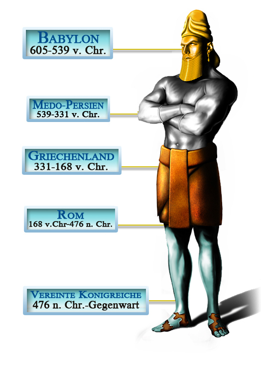

Joel und Mark waren zwei Freunde mit sehr unterschiedlichen Glaubensanschauungen. Joel glaubte an Gott als allmächtigen König, der alles in der Welt erschaffen hatte. Mark war ein überzeugter Atheist, der Religion verspottete und dachte, dass die Welt und auch er selbst durch einen Unfall, ein biologisches Missgeschick, entstanden war. „Woher willst du wissen, dass Gott existiert und die Bibel nicht nur ein Märchenbuch ist?“, forderte Mark seinen Freund oft heraus. „Gott existiert, weil die Bibel dies sagt und du kannst der Bibel vertrauen, denn sie ist Gottes Wort“, argumentierte Joel. Mark schmunzelte dann über diese unlogische Antwort und erwiderte: „Das ist genauso wie, wenn du sagst: ,Ich bin ein guter Arbeiter, weil Frank das sagt. Warum können wir Frank vertrauen? Ganz einfach: Weil ich mich für ihn verbürge.’“ Diese von Joel vertretene Zirkellogik ist fehlerhaft und wird niemanden von der Existenz Gottes oder der Wahrheit der Bibel überzeugen. Und doch haben heutzutage viele keine besseren Argumente für ihren Glauben an die Bibel. Gibt es handfeste Beweise, die für die Wahrheit der Bibel sprechen? Werfen Menschen Intelligenz und Argumentation über Bord, wenn sie Christen werden?
Ein Weg, um die Gültigkeit der Bibel zu prüfen, ist die Betrachtung ihrer Prophezeiungen. Einer von Gottes Ansprüchen ist, dass er durch die Bibel die Zukunft vorhersagen kann (Jesaja 46,9.10). Prüft man die historischen Aufzeichnungen des antiken Babylon im Buch Daniel, so hilft dies, eine Antwort auf die Frage der Gültigkeit der Bibel zu finden. Hier lesen wir von einem König namens Nebukadnezar, einem Herrscher, über den nicht nur in der Bibel, sondern auch in anderen historischen Aufzeichnungen berichtet wird. Eines Nachts hatte er einen beunruhigenden Traum. Als er aufwachte, hatte er den Traum vergessen. Nur eine Erinnerung war geblieben: Der Traum hatte ihn zutiefst beunruhigt. Er versammelte seine weisen Männer und befahl ihnen, dass sie ihm den Traum und seine Deutung sagen sollten. Sie waren allerdings völlig ratlos und antworteten: „Es ist kein Mensch auf Erden, der kundtun könnte, was der König befiehlt...“ (Daniel 2,10.11) Der König wurde sehr wütend und befahl, alle Weisen in Babylon umzubringen (Daniel 2,12). An dieser Stelle kommt nun ein hebräischer Mann mit dem Namen Daniel ins Spiel. Daniel wurde als ein Gefangener nach Babylon gebracht, als er noch ein Teenager war. Er glaubte an Gott. Als Arioch, der oberste Scharfrichter des Königs, Daniel von dem Befehl erzählte, ging Daniel zum König und erbat sich Zeit, um ihm den Traum und seine Deutung zu sagen. Der König war einverstanden. Daniel ging nach Hause und bat Gott aufrichtig um Weisheit. Gott antwortete auf sein Flehen und „hierauf wurde dem Daniel in einem Gesicht des Nachts das Geheimnis offenbart“ (Daniel 2,19)
Am nächsten Morgen begab sich Daniel in den Thronsaal des Königs und legte ihm seinen Traum offen dar: Der König hatte im Traum eine große Statue gesehen. Sie bestand aus fünf verschiedenen Teilen. Der Kopf war aus Gold, die Brust und die Arme aus Silber, der Bauch und die Schenkel aus Bronze, die Beine aus Eisen und die Füße teils aus Eisen und teils aus Ton. Dann traf ein großer Stein die Statue, schlug sie in Stücke und zermalmte sie, sodass der Wind ihren Staub davontrug (Daniel 2,31-35). Dann erzählte Daniel dem König die Bedeutung des Traumes. Der Kopf aus Gold repräsentierte Babylon. Das Silber stand für Medo-Persien. Bronze symbolisierte Griechenland. Die Beine aus Eisen repräsentierten Rom. Die Füße und Zehen, die aus einer Eisen-Ton-Mischung bestanden, repräsentierten die geteilte Macht Roms, die zum Teil schwach und zum Teil stark war. Wie sich Eisen nicht mit Ton vermischen lässt, so würden diese Nationen auch nicht aneinander haften bleiben. Der große Stein, der die Statue zermalmte, repräsentierte das Königreich Gottes. „Und... der Gott des Himmels wird ein Reich aufrichten, das nimmermehr zerstört wird. Es wird alle diese Königreiche zermalmen und zerstören; aber es selbst wird ewig bleiben.“ (Daniel 2,38-44)
Jede Vorhersage über die Königreiche, welche durch verschiedene Metalle repräsentiert sind, erfüllte sich mit einer zuverlässigen Genauigkeit. Das erste Königreich, Babylon, herrschte über die Welt von 605 bis 539 v. Chr. Die Nation der Meder und Perser regierte von 539 bis 331 v. Chr. Das nächste Reich, Griechenland, herrschte von 331 bis 168 v. Chr. Die eiserne Macht Rom von 168 v. Chr bis 476 n. Chr. Das letzte Königreich, aufgeteilt in viele kleine Reiche, repräsentiert die geteilte Macht Roms, die modernen Nationen Europas, die noch bis heute getrennt voneinander existieren. Die Bibel lag mit allen fünf Königreichen haargenau richtig und auch mit den Zeitpunkten, wann sie an die Macht kamen!
Skeptiker vermuten, dass Daniels Prophezeiungen falsch seien und sein Buch erst viel später in der Geschichte geschrieben wurde. Selbst wenn dies der Fall wäre, bleibt doch die Tatsache bestehen, dass die Schriftrollen vom Toten Meer acht Manuskripte von Daniel beinhalten, wobei das Älteste davon auf 125 v. Chr. datiert wird (welches selbst eine Kopie einer früheren Fassung ist). Dies beweist somit, dass diese Vorhersage mehrere hundert Jahre vor der Teilung Roms, in die Nationen des modernen Europas, geschrieben wurde. Und diese Prophezeiung ist nur ein Beispiel von hunderten, die von der göttlichen Inspiration der Bibel zeugen. Ein anderes Beispiel findet sich im neunten Kapitel des Buches Daniel, wo der genaue Zeitpunkt der Taufe und des Todes Jesu Christi schon hunderte Jahre zuvor vorausgesagt wurde. Wenn wir die Beweise der biblischen Prophetie untersuchen, kommen wir also zu dem Schluss, dass Gott und sein Wort absolut vertrauenswürdig sind. Das zweite Kapitel im Buch Daniel zeigt uns, wie wahr und genau diese Prophezeiungen sind, sie stärken das Fundament unseres intelligenten Glaubens. Die Bibel ist das inspirierte Wort Gottes und man kann ihr als Ratgeber in jeder Lebenssituation Glauben schenken.
Dennoch gilt: Lediglich dieser Information zu glauben macht es nur zur Information. Der Glaube allein hat keine Erlösungskraft in unserem Leben. Wir müssen durch unseren Glauben verändert werden. Es ist von unendlicher Wichtigkeit, nicht nur an die Bibel zu glauben, sondern es ihr auch zu erlauben, uns zu verändern. Die Bibel sagt, dass „auch die Dämonen glauben und zittern“ (Jakobus 2,19). Gott wird unser Leben in seine Hand nehmen und es in etwas Wunderbares verwandeln, wenn wir ihn lassen. Möchtest du das?